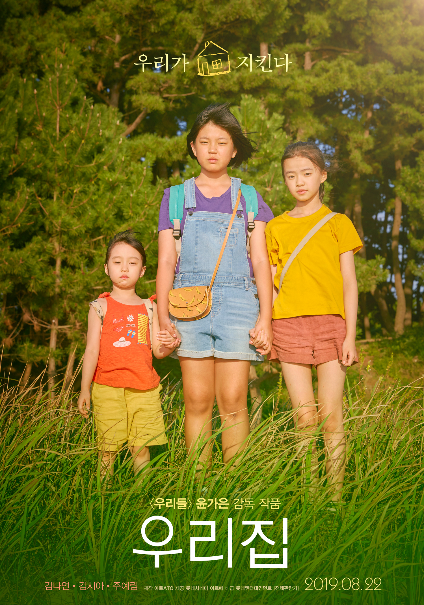

우리집은 2019년 8월 29일에 개봉한 대한민국 영화이다.
감독 : 윤가은
각본 : 윤가은
출연
김나연 - 하나 역
김시아 - 유미 역
주예림 - 유진 역
"우리집은 진짜 왜 이럴까?"
매일 다투는 모부가 고민인 12살 '하나'와
자주 이사를 다니는 게 싫기만 한 '유미', '유진' 자매는
여름방학 때 동네에서 우연히 만나 마음을 나누며 가까워진다.
풀리지 않는 ‘가족’에 대한 고민을 터놓으며 단짝이 된 세 사람은
무엇보다 소중한 각자의 ‘우리집’을 지키기 위해 모험을 감행한다.